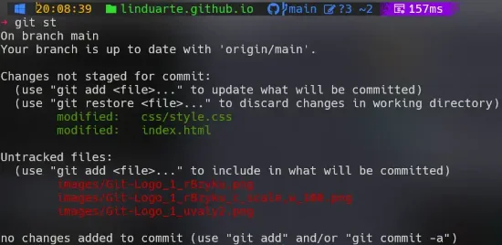

Principais estados dos arquivos no Git
O Git possui três estados nos quais seus arquivos podem ser armazenados:
“modificado”, “staged” e “commitado”.
Modificado — houve alteração, mas ainda não foi commitado.
Staged — marcado para o próximo commit.
Commitado — salvo com segurança na base de dados.
Conceitos-chave: 'Repositories', 'Commits' e 'Branches'
- 'Repositories': recipientes de projetos e histórico.
- 'Commits': “instantâneos” do estado do projeto.
- 'Branches': permitem desenvolvimento paralelo.
Git workflow (fluxo de trabalho)
git initgit addgit commit -m "Mensagem"git statusgit log
Terminal Git e por que não uma interface gráfica
A interface gráfica é intuitiva, mas o terminal oferece controle total, transparência e automação via scripts.

E como não falar de GitHub?
Criado em 2008, o GitHub revolucionou a colaboração entre desenvolvedores e foi adquirido pela Microsoft por 7,5 bilhões de dólares.